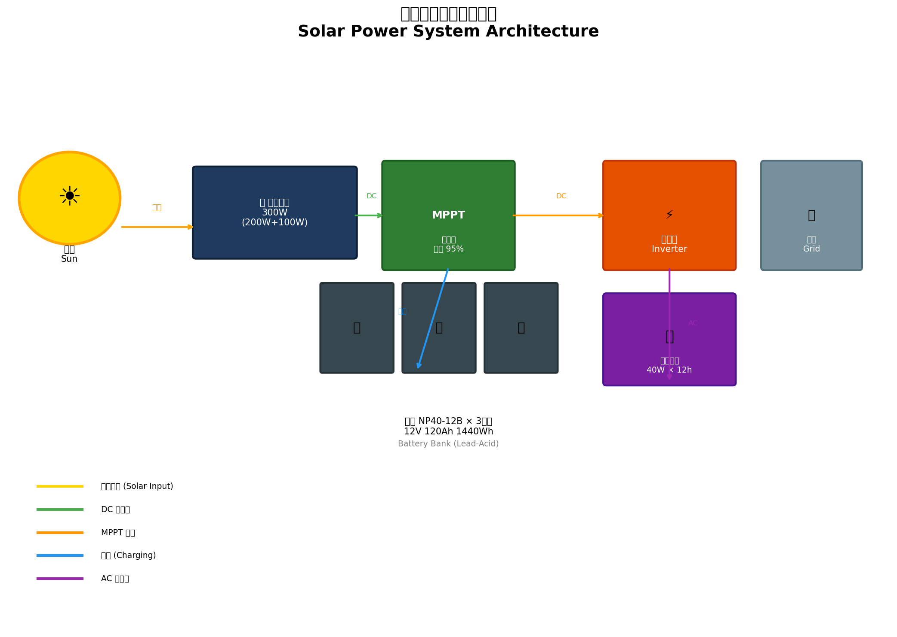
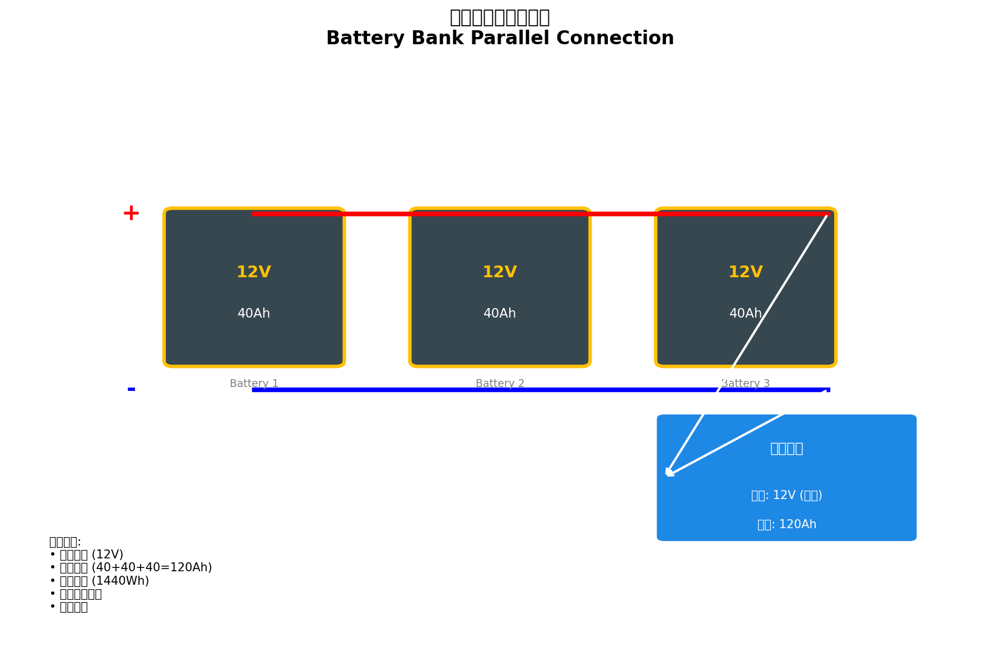
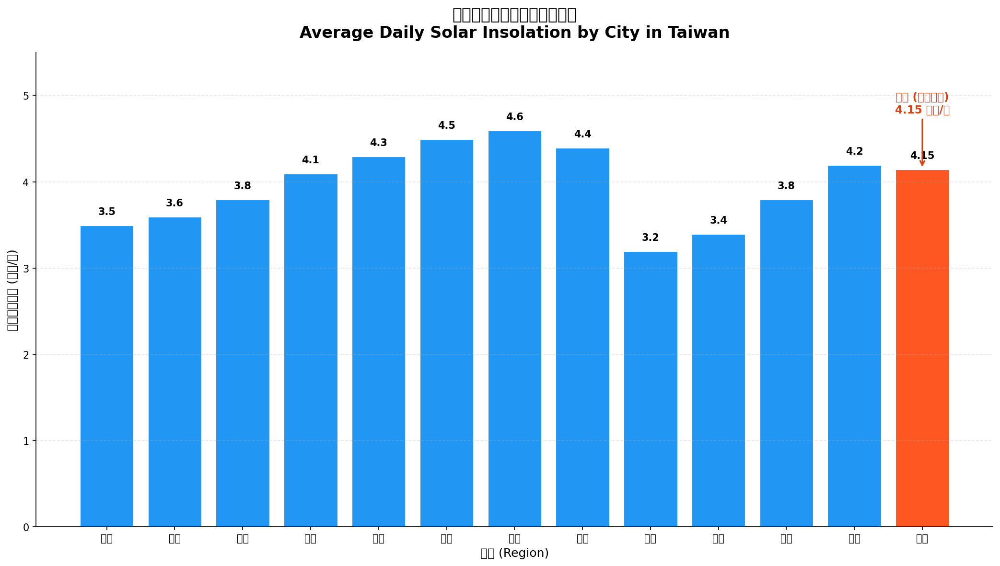
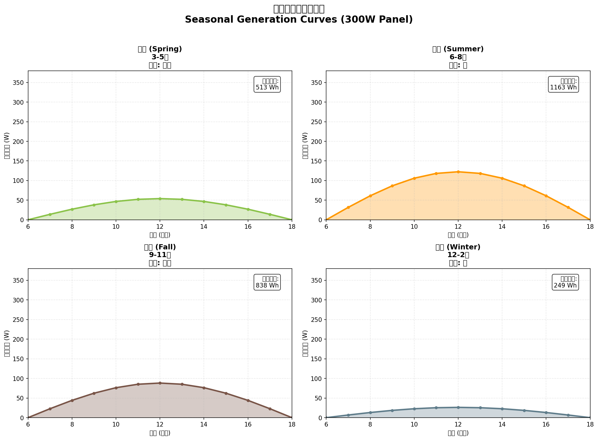
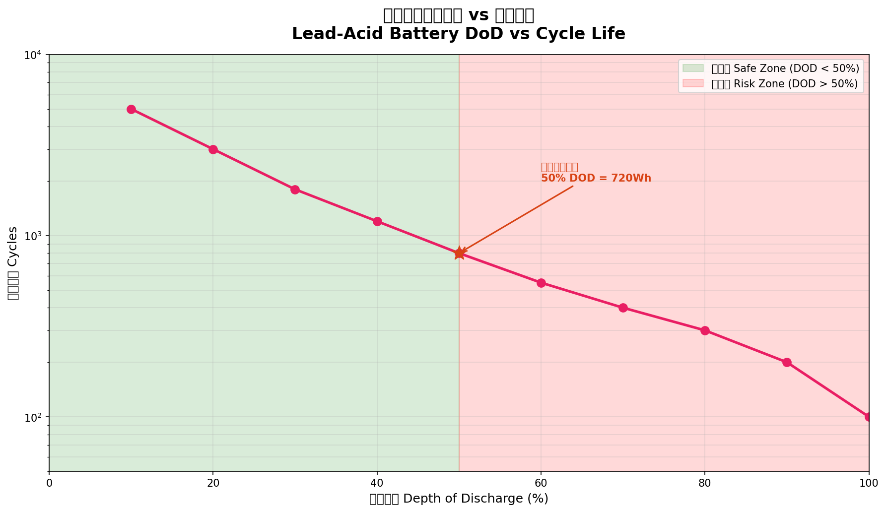
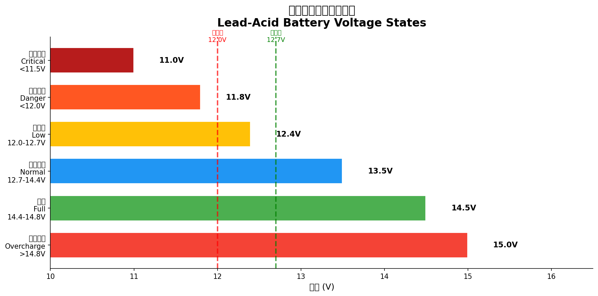
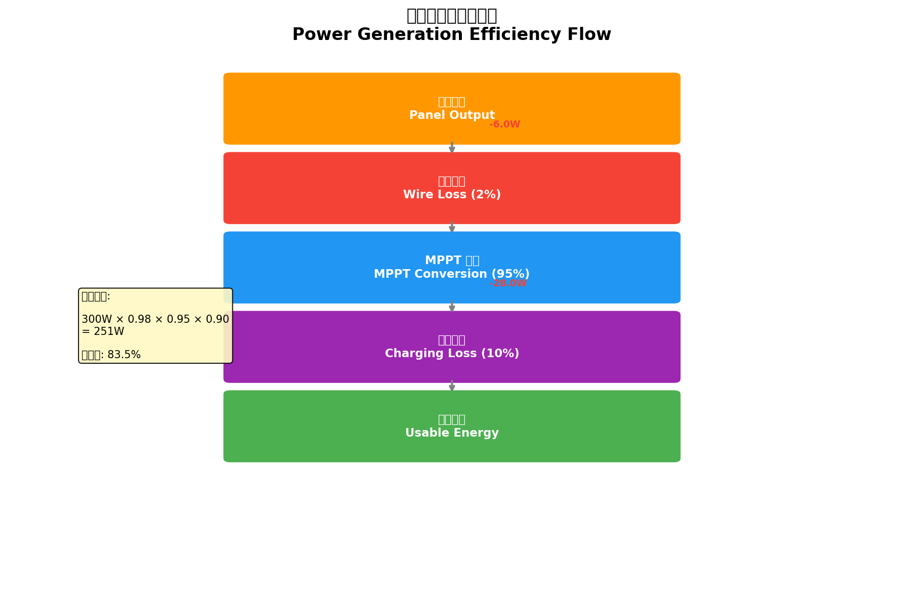
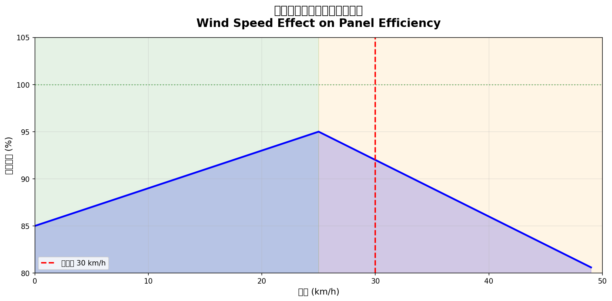
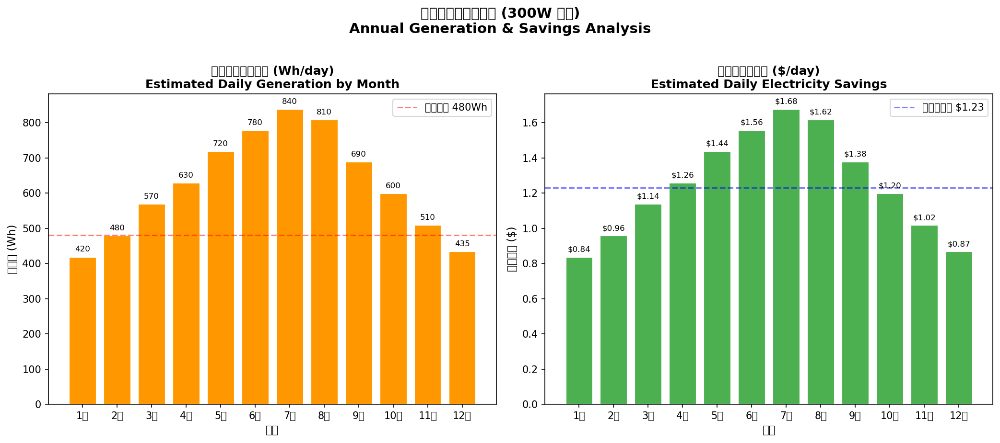

本文件旨在提供太陽能發電系統的完整技術說明，幫助用戶了解系統運作原理、日常維護方法，以及如何優化發電效率。內容針對水林鄉（雲林縣）特定環境條件進行計算與建議。
一套完整的家用太陽能發電系統主要由以下元件組成：
| 元件 | 功能 | 用戶系統規格 |
|---|---|---|
| 太陽能板 | 將陽光轉換為直流電 | 200W 單晶矽 × 1 |
| MPPT控制器 | 追蹤最大功率點、調節充電 | 效率 95% |
| 蓄電池組 | 儲存發電能量 | 湯淺 NP40-12B × 3並聯 |
| 逆變器 | 將直流電轉為交流電 | 依需求配置 |

系統的電力流動可分為以下路徑：
在白天發電時，如果發電量大於用電量，多餘的電力會先存入蓄電池。等蓄電池充滿後，如果仍在發電，則多餘電力會通過逆變器供電給電網（如果系統有並聯電網）。
| 元件 | 型號 | 電壓 | 容量 |
|---|---|---|---|
| 太陽能板 | 單晶矽 200W | - | 200W |
| 蓄電池 | 湯淺 NP40-12B | 12V | 40Ah × 3 |
| MPPT | - | 12V | 效率 95% |

太陽能板利用光生伏打效應（Photovoltaic Effect）將陽光轉換為直流電。當光子撞擊半導體材料（如矽）時，會釋放電子產生電流。
各參數說明：
| 參數 | 說明 | 典型值 |
|---|---|---|
| 面板瓦數 | 太陽能板額定功率 | 200W |
| 日照時數 | 當地平均峰值日照 | 4.15 小時（水林） |
| 天氣因素 | 依天氣狀況調整 | 0.25~0.85 |
| MPPT效率 | 控制器轉換效率 | 95% |

| 天氣型態 | 天氣因素 | 說明 |
|---|---|---|
| 晴 | 0.85 | 陽光充足，無雲遮蔽 |
| 少雲 | 0.70 | 偶有雲層遮蔽 |
| 多雲 | 0.45 | 雲層較多 |
| 陰 | 0.25 | 陰天，陽光微弱 |
| 小雨 | 0.15 | 持續降雨 |
| 陣雨 | 0.20 | 時而降水的變化天氣 |
| 雷雨 | 0.05 | 暴風雨天氣 |
| 雪 | 0.03 | 降雪天氣 |

| 項目 | 規格 |
|---|---|
| 型號 | NP40-12B |
| 電壓 | 12V |
| 容量 | 40Ah (20小時率) |
| 尺寸 | 197 × 165 × 175 mm |
| 重量 | 14.5 kg |
| 類型 | 鉛酸蓄電池（閥控式） |
鉛酸蓄電池的循環壽命與放電深度（Depth of Discharge, DoD）密切相關。放電深度越大，循環壽命越短。

了解蓄電池的電壓狀態，可以判斷當前的充電狀態和健康程度：

| 電壓範圍 | 狀態 | 建議行動 |
|---|---|---|
| > 14.8V | 過度充電 | 檢查控制器設定 |
| 14.4 - 14.8V | 滿電 | 正常 |
| 12.7 - 14.4V | 正常使用 | 正常 |
| 12.0 - 12.7V | 低電量 | 應盡快充電 |
| < 12.0V | 危險 | 立即充電 |
| < 11.5V | 深度放電 | 可能造成永久損傷 |
從太陽能板發電到實際可用的交流電，能量會經過多個階段，每個階段都會有一定的損耗：

| 階段 | 損耗率 | 說明 |
|---|---|---|
| 線材損耗 | ~2% | 電纜電阻造成的功率損失 |
| MPPT轉換 | ~5% | 控制器電子元件損耗 |
| 充電損耗 | ~10% | 電池化學反應效率 |
| 逆變損耗 | ~5% | 直流轉交流的損耗 |
在水林鄉，天氣因素對發電量的影響非常顯著。以下是不同天氣條件下的日發電量估算：
| 天氣 | 天氣因素 | 日發電量 | 說明 |
|---|---|---|---|
| 晴天 | 0.85 | ~665 Wh | 發電量大於用電 |
| 少雲 | 0.70 | ~548 Wh | 可覆蓋大部分用電 |
| 多雲 | 0.45 | ~352 Wh | 需要電瓶補充 |
| 陰天 | 0.25 | ~196 Wh | 嚴重不足 |
| 陣雨 | 0.20 | ~157 Wh | 僅能充當少量備援 |
風速對太陽能發電系統有雙重影響：適度的風可以冷卻面板提高效率，但過高的風速可能造成機械損傷。

| 風速範圍 | 影響 | 建議 |
|---|---|---|
| 0 - 25 km/h | 散熱效益，提高效率 | 正常發電 |
| 25 - 30 km/h | 輕微機械損耗 | 注意面板固定 |
| 30 - 40 km/h | 明顯機械損耗 | 加強固定，考虑停發 |
| > 40 km/h | 可能造成損傷 | 緊急停機保護 |
太陽能板的發電效率會隨溫度升高而下降。標準測試條件（STC）為 25°C，每上升 1°C，發電效率約下降 0.4-0.5%。
水林鄉 5-6 月為梅雨季節，連續降雨可能導致發電量大幅下降。此時應：
條件：
計算：
蓄電池容量的選擇應考慮：
用戶系統：12V × 120Ah = 1,440Wh（可用 720Wh），略低於理想值，建議可考慮增加面板或降低用電。

| 項目 | 數值 |
|---|---|
| 電費費率 | $2.0 / 度（住宅用電） |
| 日耗電量 | 480 Wh = 0.48 度 |
| 日電費 | $0.96 / 天 |
| 月電費（用市電） | 約 $29 / 月 |
| 項目 | 費用 | 說明 |
|---|---|---|
| 200W 面板 | $3,000-4,000 | 單晶矽優質面板 |
| MPPT 控制器 | $1,500-3,000 | 30A MPPT |
| 湯淺 NP40-12B × 3 | $9,000-12,000 | 含安裝 |
| 線材與配件 | $1,000-2,000 | |
| 安裝工資 | $2,000-5,000 | |
| 總投資 | $16,500-26,000 |
| 頻率 | 項目 | 方法 |
|---|---|---|
| 每日 | 發電量觀察 | 記錄逆變器顯示的發電量 |
| 每週 | 面板清潔 | 用清水沖洗，軟布擦拭 |
| 每月 | 電壓檢測 | 使用電表測量電瓶電壓 |
| 每季 | 連接檢查 | 確認所有接頭緊固、無氧化 |
| 每年 | 全面檢修 | 請專業人員檢查系統 |
| 問題 | 可能原因 | 解決方案 |
|---|---|---|
| 發電量過低 | 面板髒污、遮蔭、MPPT故障 | 清潔面板、移除遮擋物、檢查MPPT |
| 蓄電池無法充滿 | 太陽能板功率不足、控制器設定錯誤 | 檢查發電量、調整控制器設定 |
| 蓄電池很快就沒電 | 老化、用電量增加、充電不足 | 檢查用電、評估更換電池 |
| 逆變器跳脫 | 過載、短路、内部故障 | 減少用電、檢查線路、聯繫廠商 |
| 系統完全無反應 | 保險絲熔斷、斷路、蓄電池耗盡 | 檢查保險絲、檢查電瓶電壓 |
| 項目 | 規格 |
|---|---|
| 額定功率 | 200W |
| 額定電壓 | 20V |
| 額定電流 | 10A |
| 開路電壓 | 24V |
| 短路電流 | 10.5A |
| 尺寸 | 約 1640 × 992 × 40 mm |
| 重量 | 約 18 kg |
| 項目 | 規格 |
|---|---|
| 電壓 | 12V |
| 容量（20HR） | 40Ah |
| 尺寸 | 197 × 165 × 175 mm |
| 重量 | 14.5 kg |
| 最大放電電流 | 400A（5秒） |
| 工作溫度 | -15°C 至 50°C |
| 使用壽命 | 3-5 年（依使用條件） |
| 項目 | 規格 |
|---|---|
| 類型 | MPPT（最大功率點追蹤） |
| 最大輸入電壓 | 100V |
| 最大輸入電流 | 30A |
| 系統電壓 | 12V / 24V 自動識別 |
| 轉換效率 | ≥ 95% |
| 工作溫度 | -25°C 至 55°C |
| 版本 | 日期 | 說明 |
|---|---|---|
| 1.0 | 2026-04-02 | 初版發行 |
本文件僅供參考之用。實際系統效能會因環境條件、安裝品質、設備狀態等因素而有所差異。作者不對使用本文件內容所造成之任何損失或損害承擔責任。如需專業建議，請諮詢合格的太陽能系統安裝商或電氣工程師。